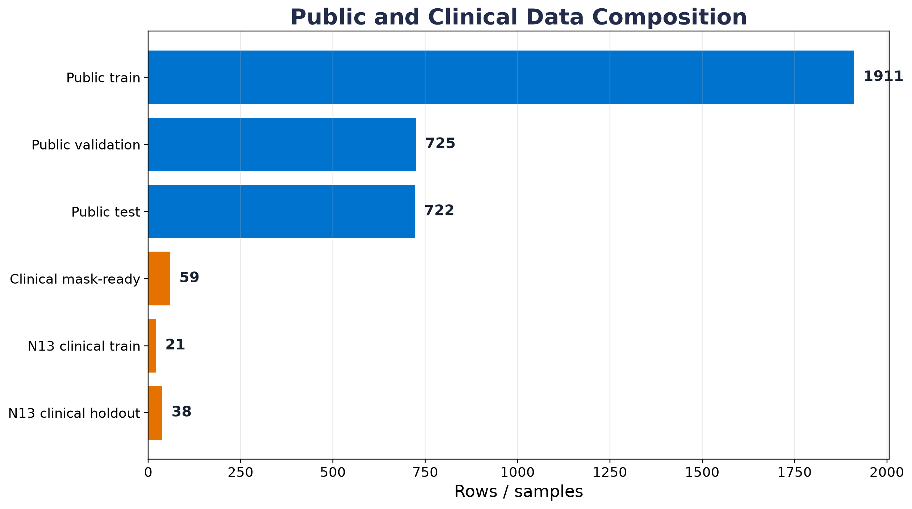
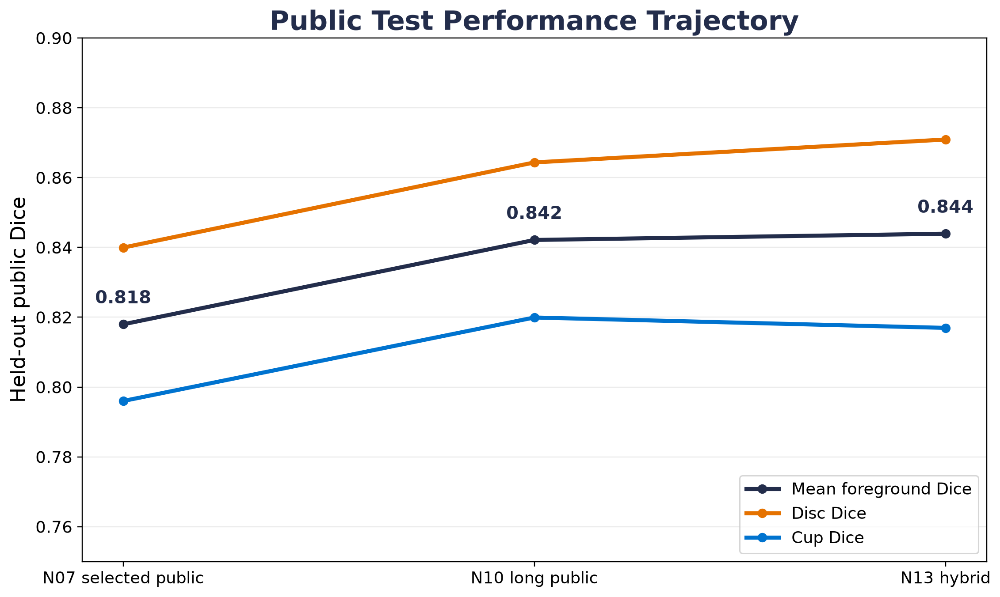
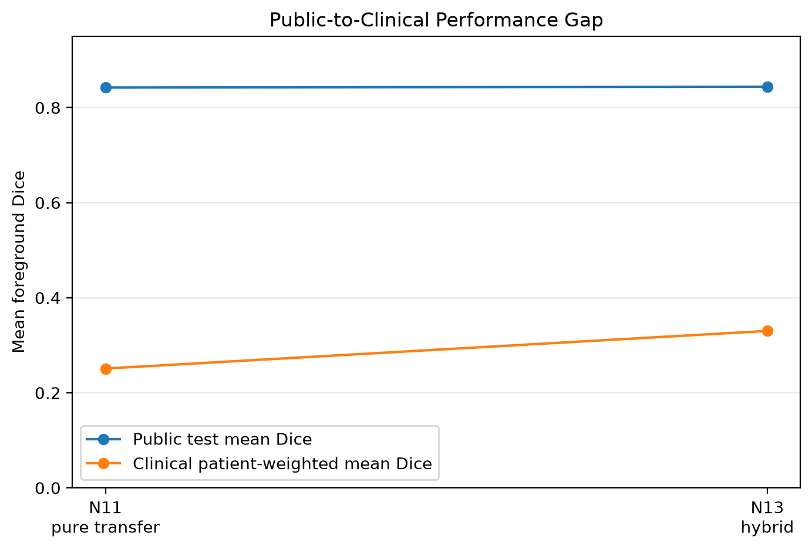
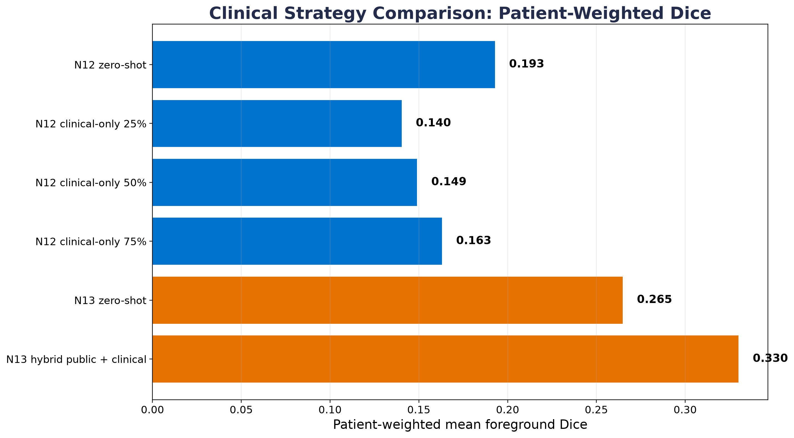
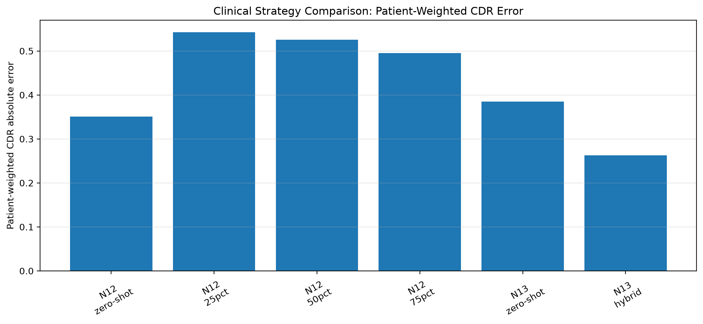

Best held-out public mean Dice
0.844
Highest public held-out mean foreground Dice across final public and hybrid models.
UVA MSDS Capstone
Segmentation model development, clinical-transfer analysis, and public-safe evidence storyboard.
Executive summary
This capstone built a reproducible optic disc/cup segmentation pipeline from public fundus datasets, tested model-selection and augmentation strategies, evaluated clinical transfer, and compared clinical-only adaptation with hybrid public-clinical training.
Top-line results
Metrics are final public-safe aggregate values generated by the final synthesis notebook.
Highest public held-out mean foreground Dice across final public and hybrid models.
Notebook 10 public test mean Dice improvement over the Notebook 07 selected public model.
Clinical PSD-derived samples with usable approximate disc/cup masks.
Patient/encounter groups represented in mask-ready clinical PSD-derived data.
Notebook 13 hybrid model improvement over Notebook 10 zero-shot baseline on the same held-out clinical half.
Reduction in patient-weighted CDR absolute error for the Notebook 13 hybrid model relative to the internal zero-shot baseline.
Method and provenance
Each stage links to the notebook that produced or analyzed that part of the project.
Configured a reproducible environment and established repo paths.
Audited available public data and began manifest construction.
Created public manifests and train/validation/test splits across ORIGA, G1020, REFUGE, and PAPILA.
Established a baseline segmentation model and metrics pipeline.
Compared U-Net, U-Net++, and DeepLabV3+ under the same public-data training budget.
Tested online augmentation strength and stability.
Tested synthetic add-back strategies without materializing synthetic image files.
Evaluated the selected public-data model once on the held-out public test split.
Screened combined augmentation recipes using public validation only.
Trained the selected recipe for 25 epochs and improved held-out public performance.
Converted annotated clinical PSD files into approximate disc/cup masks for exploratory transfer evaluation.
Evaluated the long public-trained model on PSD-derived clinical data without clinical training.
Tested small clinical fine-tuning fractions with patient/encounter-group holdout.
Added 50% of clinical patient groups before augmentation and evaluated the remaining held-out clinical half.
Built public-safe tables, claims, figures, and this GitHub Pages storyboard.
Public test results
These comparisons use the same held-out public test split.
| Notebook | Model stage | Mean Dice | Disc Dice | Cup Dice | CDR MAE | Δ mean Dice vs public finalist |
|---|---|---|---|---|---|---|
| Public finalist | Public finalist model | 0.818 | 0.840 | 0.796 | 0.064 | 0.000 |
| Long public model | Long-trained public model | 0.842 | 0.864 | 0.820 | 0.063 | 0.024 |
| Hybrid training | Hybrid public + clinical model | 0.844 | 0.871 | 0.817 | 0.063 | 0.026 |
Clinical transfer and adaptation
This section separates clinical-only adaptation from hybrid public-clinical training and explains how to interpret improvement.
| Notebook | Strategy | Condition | Patient-weighted Dice | Δ vs internal zero-shot | Patient CDR error | Comparison scope |
|---|---|---|---|---|---|---|
| Clinical fine-tuning | Clinical-only fine-tuning | Zero-shot public model on clinical holdout | 0.193 | 0.000 | 0.351 | Within-notebook same clinical split |
| Clinical fine-tuning | Clinical-only fine-tuning | Clinical-only fine-tuning, 25% training groups | 0.140 | -0.053 | 0.543 | Within-notebook same clinical split |
| Clinical fine-tuning | Clinical-only fine-tuning | Clinical-only fine-tuning, 50% training groups | 0.149 | -0.044 | 0.525 | Within-notebook same clinical split |
| Clinical fine-tuning | Clinical-only fine-tuning | Clinical-only fine-tuning, 75% training groups | 0.163 | -0.030 | 0.495 | Within-notebook same clinical split |
| Hybrid training | Hybrid public + clinical pre-augmentation | Zero-shot long public model on 50% clinical holdout | 0.265 | 0.000 | 0.385 | Within-notebook same clinical split |
| Hybrid training | Hybrid public + clinical pre-augmentation | Hybrid public + clinical training | 0.330 | 0.065 | 0.263 | Within-notebook same clinical split |
Visual evidence
Figures support the story; the surrounding text explains what each result means and what should happen next.

This figure shows the imbalance between the large public training corpus and the very small PSD-derived clinical set. That imbalance is central to the project’s conclusion: the best next step is not simply another architecture tweak, but a larger, cleaner, segmentation-ready clinical dataset with proper layered disc/cup masks.
Open full-size figure
The public-data pipeline improved from the selected public finalist to the longer public-training run and stayed strong after the hybrid public-clinical training experiment. This supports the claim that the final hybrid step did not sacrifice public test performance.
Open full-size figure
This figure is the main domain-shift evidence. Public test Dice remained high, while clinical patient-weighted Dice remained much lower. The model learned public fundus segmentation well, but public performance alone did not make it clinically robust.
Open full-size figure
Clinical-only fine-tuning did not beat its internal zero-shot baseline, while the hybrid public-clinical training strategy improved patient-weighted Dice on its held-out clinical split. This suggests clinical signal was more useful when integrated before augmentation rather than used as a tiny fine-tuning-only dataset.
Open full-size figure
This figure tracks the downstream cup-to-disc-ratio error. Lower is better. The hybrid model reduced patient-weighted CDR error relative to its zero-shot baseline, but the result remains exploratory because clinical labels were approximate PSD-derived masks.
Open full-size figureEvidence-backed conclusions
This is the readable version of the final claims matrix. It is more important than the static exported matrix image.
Caveat: Public fundus test performance does not guarantee clinical/head-mounted transfer.
Caveat: This comparison is public-domain only.
Caveat: Clinical masks are approximate PSD-derived labels and the sample size is small.
Caveat: Best Notebook 12 condition was zero_shot_notebook_10_on_clinical_test; clinical training splits were very small.
Caveat: The improvement is on a small held-out clinical split and should be treated as exploratory.
Caveat: CDR is sensitive to approximate cup/disc mask quality and clinical labels remain limited.
Caveat: A deployable system would require larger clinical annotation, prospective validation, and clinical workflow review.
Public-safe assets
These are committed aggregate outputs and source notebooks. Private clinical images, paths, patient hashes, and image-level private metrics are not included.